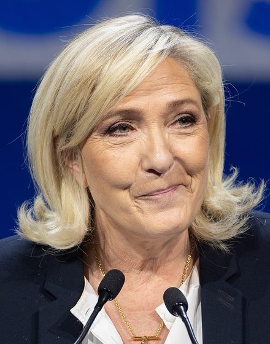
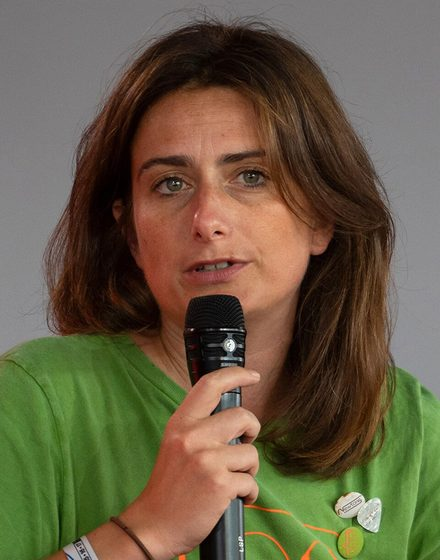
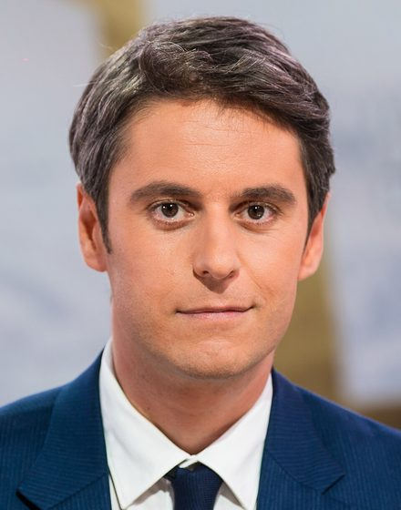

Présidentielle · 22 avril 2027
Quel programme vous ressemble vraiment ?
Aucun nom avant le verdict.
20 propositions, 3 minutes. Les affiches ne se retournent qu'à la fin.
Aucune donnée envoyée. Tout reste dans votre navigateur.
Votre affiche
Programme le plus proche
Nicolas
Dupont-Aignan
Debout la France · 20 positions publiées
Écart de 3 points avec le deuxième : la différence n'est pas significative.



Photographies : Wikimedia Commons, licences CC BY-SA — crédits détaillés en pied de page.